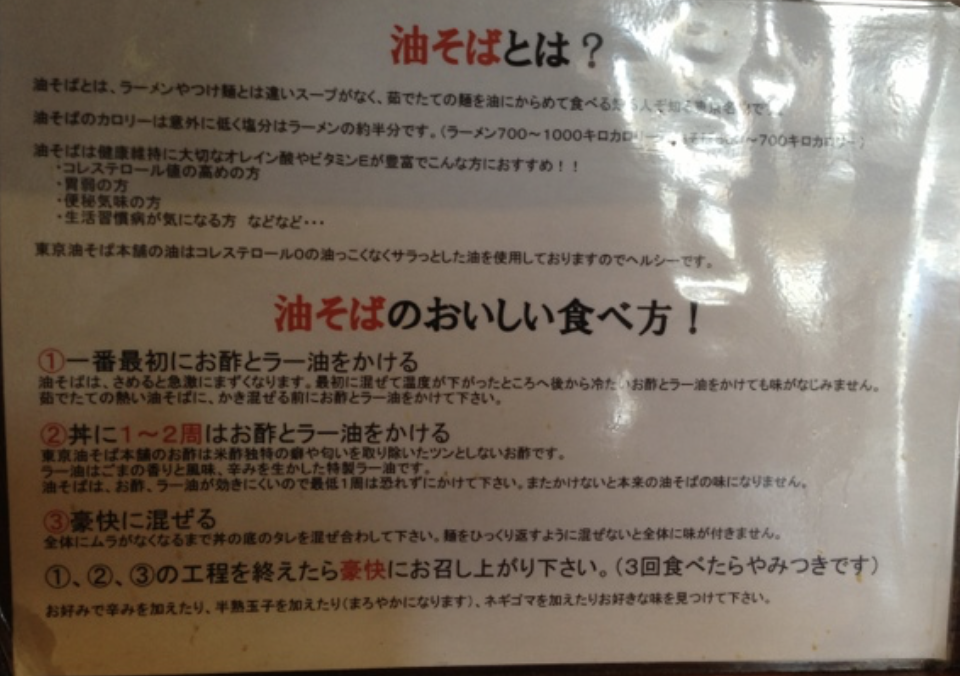

油そばのおいしい食べ方！
- 一番最初にお酢とラー油をかける
油そばは、冷めると急激にまずくなります。最初に混ぜて温度が下がったところへ後から冷たいお酢とラー油をかけても味がなじみません。茹でたての熱い油そばに、かき混ぜる前にお酢とラー油をかけて下さい。
- 丼に1～2周はお酢とラー油をかける
東京油そば本舗のお酢は米酢独特の癖や匂いを取り除いたツンとしないお酢です。ラー油はごまの香りと風味、辛みを生かした特製ラー油です。油そばは、お酢、ラー油が効きにくいので最低一周は恐れずにかけて下さい。またかけないと本来の油そばの味になりません。
- 豪快に混ぜる
全体にムラがなくなるまでの丼のタレを混ぜ合わして下さい。麺をひっくり返すように混ぜないと全体に味が付きません。①、②、③の工程を終えたら豪快にお召し上がり下さい。（3回食べたらやみつきです）お好みで辛みを加えたり、半熟玉子を加えたり（まろやかになります）、ネギゴマを加えたりお好きな味を見つけて下さい。
